Your Personal Reef Tank Expert
AI-powered stability tracking, smart digital logbook, and targeted water chemistry guidance for saltwater aquariums.
Built by an experienced reef keeper to simplify water testing, logging, and keeping parameters steady. Coralist connects your test results, dosing regimens, hardware setup, and livestock in one unified dashboard—empowered by an AI agent that spots emerging problems and proposes practical advice tailored to your system.
-
Master Your Reef Tank Log & monitor parameters with ease. Track stability trends and keep water chemistry steady.
-
Easy & Quick Logbook Keep a detailed history of water tests, dosing routines, hardware, and livestock additions across your tanks.
-
Smart AI Analyses & Advice Optimize your tank with expert diagnostics, automated nutrient tracking, and targeted dosing adjustments.
-
Never Miss a Dose Automated task schedules and timely alerts tailored to your aquarium setup and maintenance demands.
-
Your 24/7 Marine Expert Chat with specialized AI Agent anytime for dosing calculations, problem diagnoses, and coral compatibility.
Built for Reef Keepers, Corals, and Long-Term Stability
From weekly water tests to stocking decisions at your local fish store, Coralist gives you the clarity to keep your tank thriving.
Digital Logbook
Testing a saltwater tank with a paper notebook nearby usually ends with wet, stained pages and lost records. Spreadsheets store numbers, but they won't help you learn from them or alert you when an alkalinity drop lines up with coral stress. Coralist keeps your water tests, livestock additions, hardware setup, and equipment maintenance together—with full support for multiple tanks. Effortlessly switch between your main display tank, dedicated frag tank, and quarantine setup with isolated chemistry histories, livestock profiles, and custom targets for each system.
Configurable Dashboard
Every system has different requirements — a mixed tank, LPS, or nano runs differently than a high-demand SPS reef. Coralist comes with preset reference ranges tailored for SPS-dominant, LPS-dominant, and fish-only tanks, so you start with sensible targets right away. Customize your dashboard with the exact parameters you care about — Alkalinity, Calcium, Magnesium, Nitrate, Phosphate, and Salinity — and see at a glance whether your water is in the sweet spot with intuitive, color-coded dials.
Smart Task Lists
Never miss a water change, filter fleece replacement, or test schedule again. From guided cycling programs for brand new setups to recurring maintenance routines that keep a mature marine aquarium thriving, the AI assistant generates checklists tailored to your setup, equipment, and livestock demands.
Stability Index Chart
Corals rarely suffer from a single parameter reading; they suffer from sudden swings. The Stability Index tracks your long-term trends across 1-, 3-, 6-, and 12-month windows and adjusts its scoring based on your livestock type—because what counts as "stable" for an SPS tank is different from a fish-only marine tank. By highlighting creeping deviations early, it helps you focus on what really matters in reef keeping: flattening the curve and keeping your water chemistry steady.
AI Analyses & Advice
Instead of wondering how a set of test results interacts, Coralist evaluates your numbers together, not in isolation. The app highlights your overall water state, explains potential impacts on your corals and invertebrates, and provides practical, grounded advice on what adjustments to make—or when it's best to leave things alone.
Context-Aware Assistant
Ask questions without re-explaining your setup every time. Whether you maintain a delicate sea aquarium, a nano reef, or a high-demand SPS system, the assistant already knows your tank volume, parameters, equipment, and livestock—so you can use it to build or adjust a dosing program, plan maintenance tasks, or check at your local fish store whether a new fish or coral is compatible with what you already have.
Frequently Asked Questions
Common questions about tracking saltwater chemistry, parameter stability, and AI features in Coralist.
Which platforms will Coralist be available on?
Coralist is built natively for both iOS (iPhone) and Android mobile devices. We are currently conducting our closed beta testing phase.
Do I have to create an account?
Only if you want to use cloud backup of your data and AI expert analyses.
You can use Coralist locally to log water parameters, track maintenance tasks, and view stability charts without an account. Creating an account is only required if you want secure cloud backup across your devices and access to AI expert analyses and recommendations.
How to set up the app for first usage?
Setting up Coralist for your reef tank is quick and intuitive. By logging your livestock, dosing schedule, and equipment hardware upfront, the app can calculate accurate biological loads, predict parameter consumption, and provide contextual AI advice:
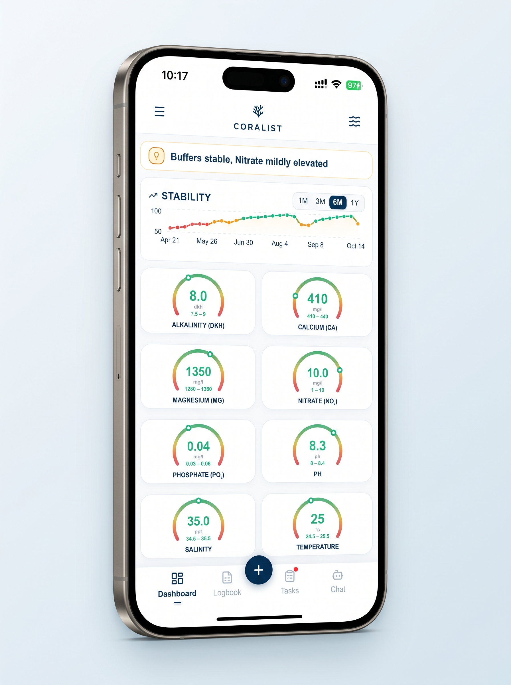
Click on Logbook
Tap Logbook in the bottom navigation bar to open your aquarium management hub.
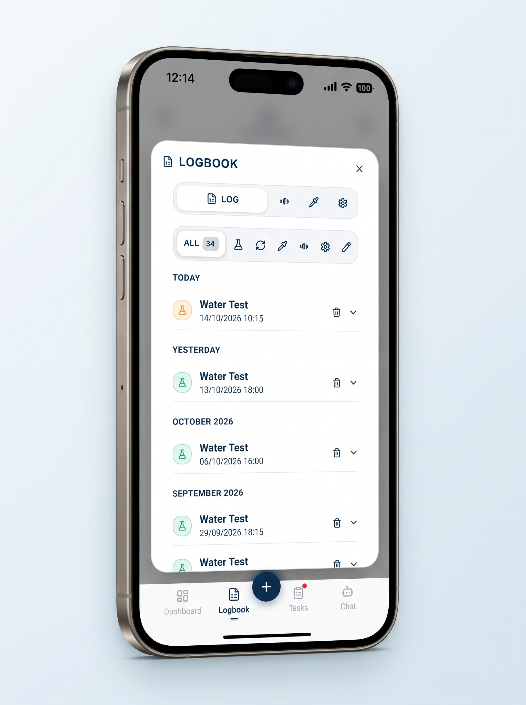
Select Fish Icon
Click on the Fish Icon in the top sub-navigation to manage your aquarium livestock.
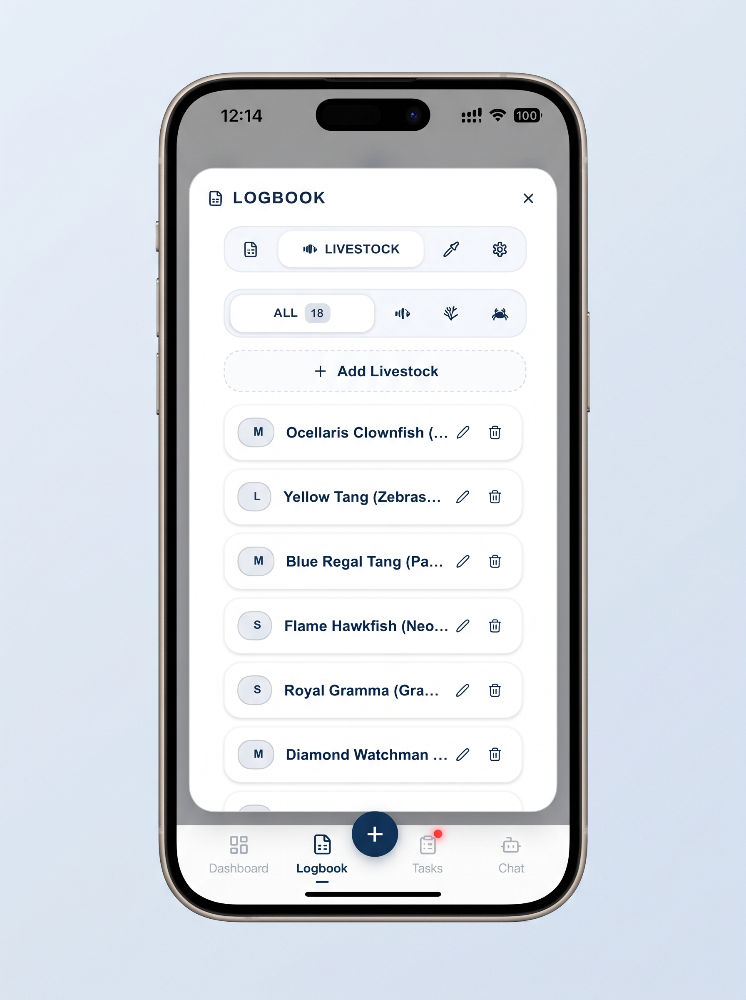
Click on Add Livestock
Tap the blue + Add Livestock button to register a new coral, fish, or invertebrate.
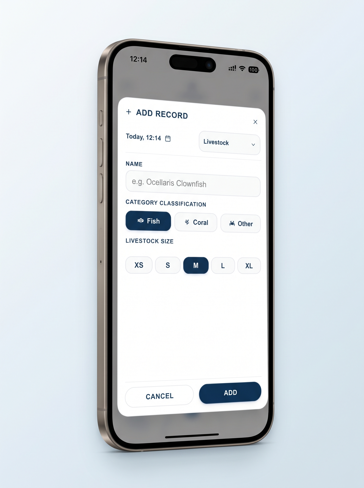
Fill Livestock Details
Enter the species name, quantity, introduction date, and placement notes, then save.
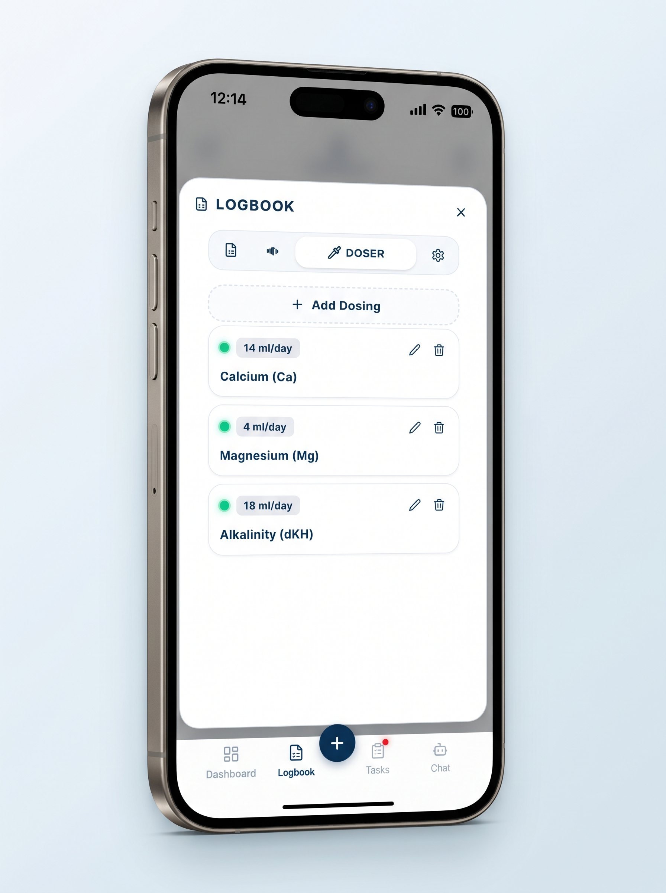
Select Doser Icon & Add Dosing
Click on the Doser icon in the Log pane, then tap Add Dosing.
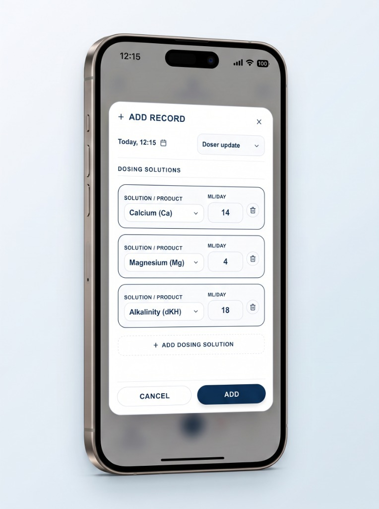
Add Dosing Details
Enter your additive details (element, brand, concentration, daily volume, and dosing schedule).
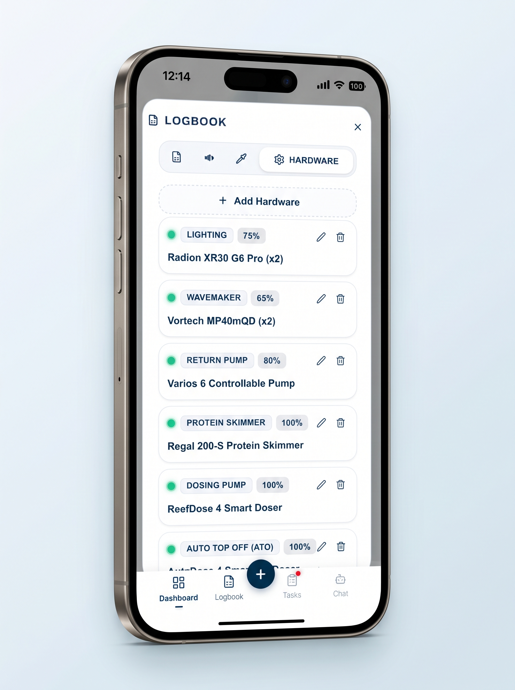
Click Hardware & Add Hardware
Click on the Hardware tab in the Log pane, then tap Add Hardware.
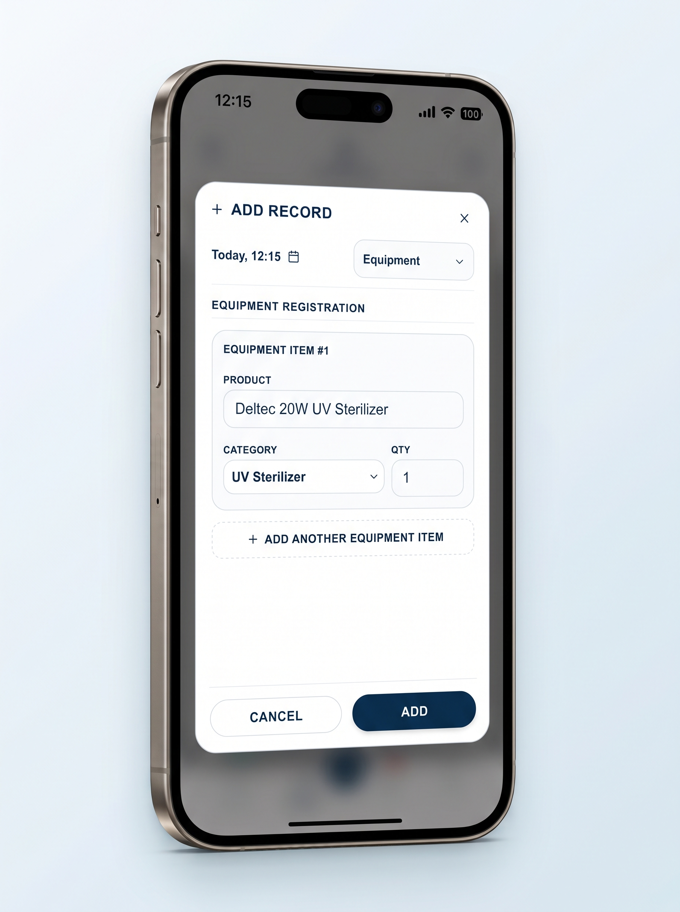
Add Device Details
Catalogue your equipment (lighting, skimmer, return pump, wavemaker) and maintenance schedules.
What water parameters can I log and track in Coralist?
Coralist provides full tracking and logging for all essential saltwater and reef aquarium parameters, featuring custom target ranges, alert boundaries, and color-coded status dials:
Major Elements & Foundation
- Alkalinity (dKH): Carbonate buffer (7–11 dKH) for coral calcification.
- Calcium (Ca): Dissolved calcium (400–450 mg/L) for skeletal growth.
- Magnesium (Mg): Ionic balance (1250–1450 mg/L) preventing precipitation.
- Potassium (K): Essential macro element (380–420 mg/L) for coral coloration and cellular function.
- Boron (B): pH buffering and skeletal formation (4–5 mg/L).
Nutrients & Cycling
- Nitrate (NO₃): Nutrient management (2–15 mg/L) for zooxanthellae health.
- Phosphate (PO₄): Inorganic nutrient tracking (0.02–0.1 mg/L).
- Ammonia: Biological filter indicator and cycling status (0 mg/L).
- Nitrite: Intermediate nitrogen cycle tracking (0 mg/L).
Trace Elements & Water Quality
- Iodine (I): Trace element (0.055–0.07 mg/L) for soft corals and invertebrate health.
- Silicon (Si): Dissolved silicate (0–0.2 mg/L) to monitor diatom control.
- Salinity: Measured in practical salinity (34–36 ppt) or Specific Gravity (SG).
- pH & Temperature: Day/night pH balance (7.8–8.4) and thermal stability (°C / °F).
Every parameter comes with customizable target ranges or pre-configured presets tailored for SPS-dominant reefs, LPS aquariums, soft corals, or mixed systems.
Can I manage multiple tanks like a frag tank or quarantine tank?
Yes. Coralist is engineered with full multi-tank support so you can manage your entire setup in one app:
- Main Display Tank: Track long-term stability, coral calcification rates, dosing routines, and livestock compatibility in your showpiece aquarium.
- Frag Tank: Keep separate logs for coral propagation, accelerated growth parameters, high-intensity lighting cycles, and frag inventories.
- Quarantine Tank (QT): Monitor new fish and coral arrivals, track prophylactic treatments and medications, and record observation periods completely isolated from your display system.
Each tank has its own independent water chemistry history, custom target ranges, livestock logs, equipment profiles, and AI-driven maintenance tasks.
How does Coralist help prevent coral stress and parameter swings?
In reef keeping, stability is king. Coralist’s Stability Index calculates long-term stability scores across 1-, 3-, 6-, and 12-month windows. By flagging creeping trends and sudden swings early, the app helps you make gradual corrections before visible coral stress, bleaching, or tissue necrosis occurs.
How does the AI Water Test Analysis work?
Rather than evaluating individual test numbers in isolation, Coralist analyzes your parameters collectively alongside historical trends, aquarium volume, and livestock sensitivity (SPS, LPS, soft corals). It diagnoses whether an imbalance is emerging and recommends practical adjustments—or advises when it is best to leave things alone to protect stability.
How do I use the app for analyses of water tests?
Using Coralist to analyze your water tests is fast and seamless. Simply log your latest test results, and our specialized AI Agent will cross-examine your readings against historical stability trends, aquarium volume, hardware configuration, and livestock demands to generate detailed diagnostics and advice:
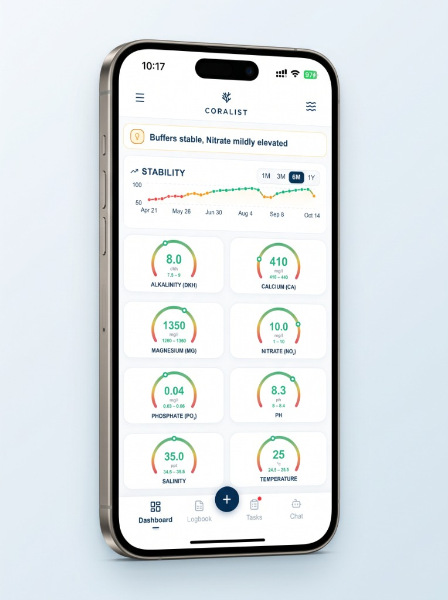
Click the + Button
Tap the dark blue + button at the bottom of the navigation bar to create a new tank record.
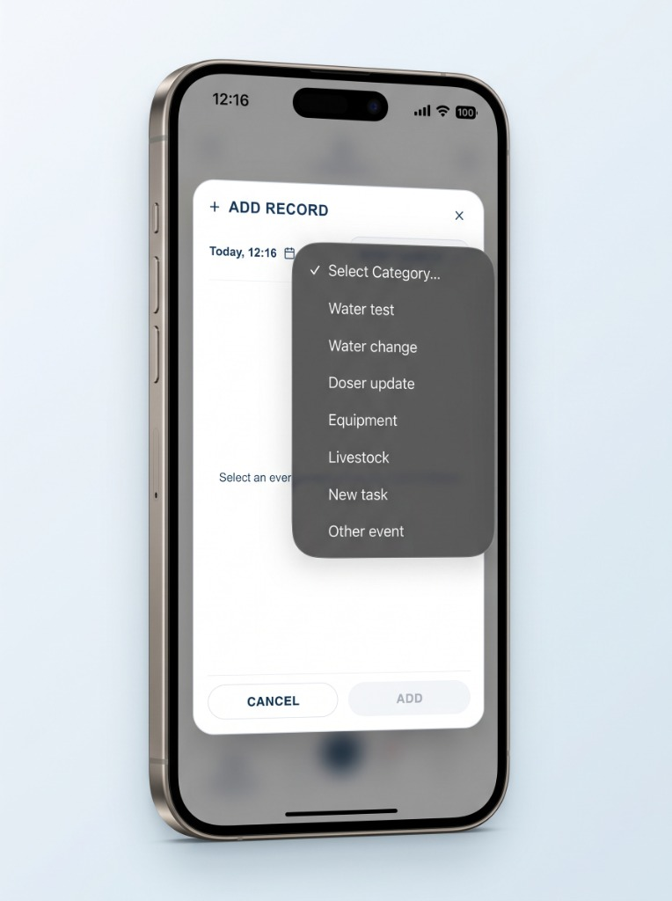
Select "Water test"
In the Add Record sheet, choose Water test from the category dropdown menu to open parameter inputs.
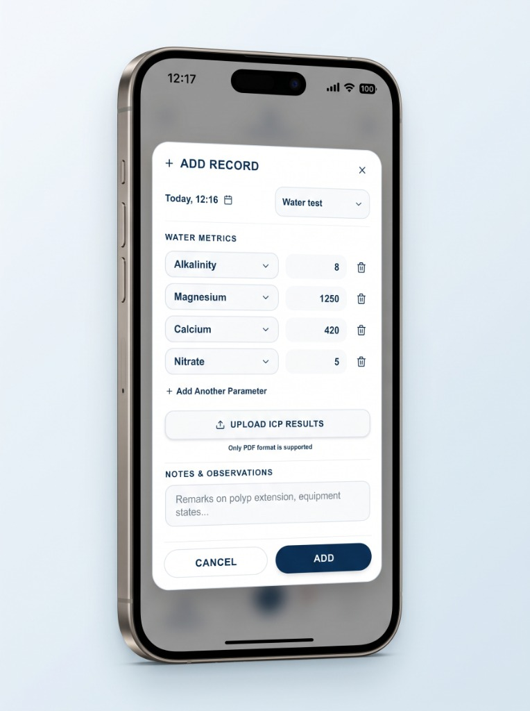
Add Parameters & Submit
Enter your test results (Alkalinity, Calcium, Magnesium, Nitrate, etc.) or upload ICP PDF results, then tap Add.
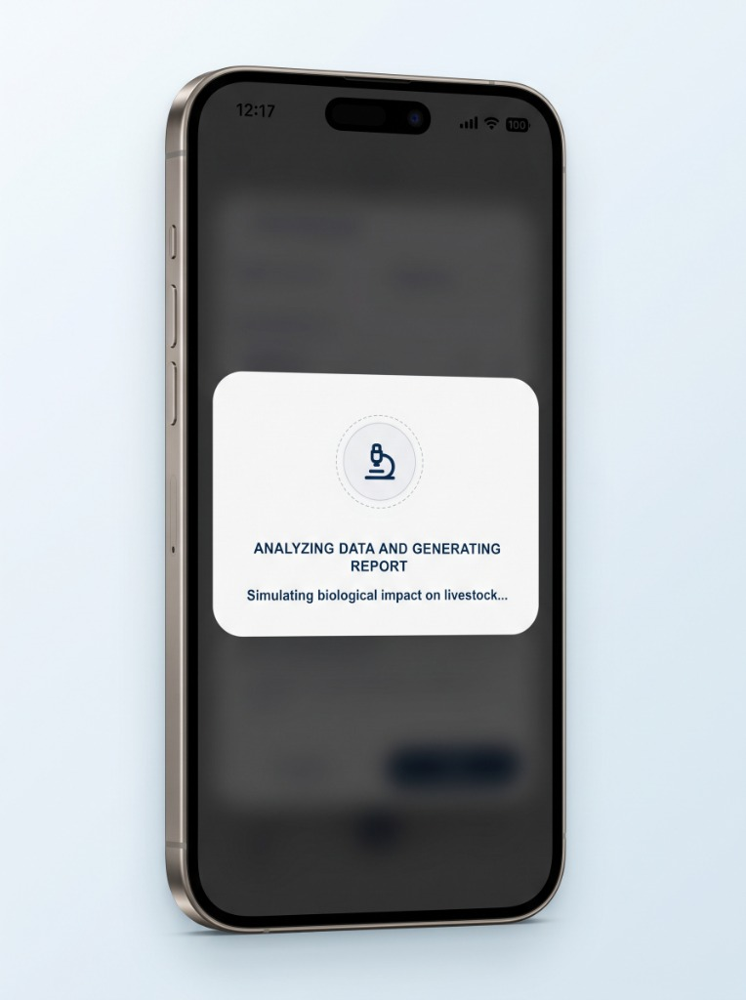
AI Agent Analyzes Your Tank
The app calls the AI Agent to analyze your readings against your historical stability, tank equipment, and coral species.
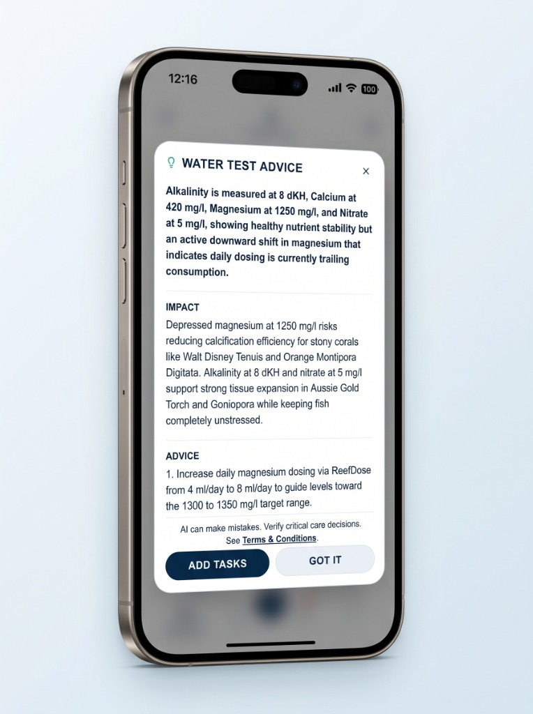
Receive Analyses & Advice
Get a comprehensive diagnostic breakdown with biological impact warnings and actionable dosing recommendations.
How does AI task generation work in Coralist?
Coralist’s AI assistant creates personalized maintenance routines based directly on your tank's specifications—including water volume, maturity, equipment setup, livestock, and testing history. Whether you need a step-by-step cycling protocol for a brand-new system, a recovery routine after parameter swings, or recurring maintenance for skimmer cleaning, dosing refills, and media swaps, the AI drafts an actionable schedule that you can customize, set reminders for, and track with a single tap.
How to Request Account and Data Deletion?
In accordance with Google Play Developer Policies and data privacy regulations (GDPR and CCPA), Coralist provides full control over your personal data. You can delete your account and all associated data at any time using either of the following methods:
Method 1: Delete Directly in the Mobile App
- Open the Coralist app on your device.
- Tap the menu icon in the top navigation bar to open the Settings Drawer.
- Scroll down to the bottom section.
- Tap "Delete Account".
- Confirm the deletion prompt. Your session will immediately end, and your account will be marked for permanent removal.
Method 2: Request Deletion via Email (If the app is uninstalled)
If you no longer have the app installed or cannot access your account, you can submit a manual deletion request:
What Data is Permanently Deleted
When your account is deleted, the following data is permanently purged from our database:
- Account credentials, email address, and authentication records.
- Aquarium profiles, tank volume specifications, and livestock records.
- All water parameter logs, testing history, dosing records, and logbook entries.
- Scheduled tasks, custom maintenance reminders, and notifications.
- AI chat history, personalized advice logs, and custom programs.
Data Retention and Processing Window
- In-app deletion requests are processed immediately upon confirmation.
- Email deletion requests are verified and completed within 48 hours.
- All database records and backup archives are completely expunged within 30 days.
Note on Active Subscriptions: Deleting your account does not automatically cancel an active Google Play or App Store subscription. To avoid future billing, please cancel your auto-renewing subscription directly in your device’s store settings (Google Play > Profile > Payments & Subscriptions > Subscriptions).
Interested in testing Coralist?
We are in the final stretch of our closed testing phase on iOS (TestFlight) and Android. If you would like early access and are willing to share feedback on how Coralist fits your reefkeeping routine, we would love to welcome you aboard.
Need Help or Support?
Whether you have questions, feedback, or need assistance with your tank data or app setup, we are here to help. Reach our team directly at:
Looking for dedicated App Store support? Visit our Support Page.